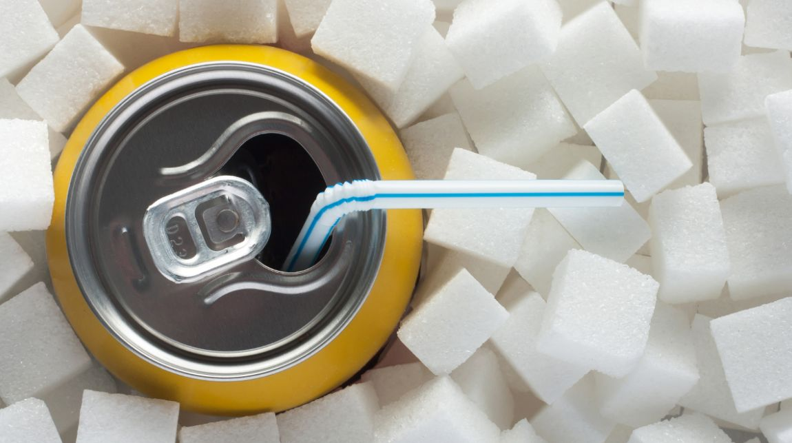
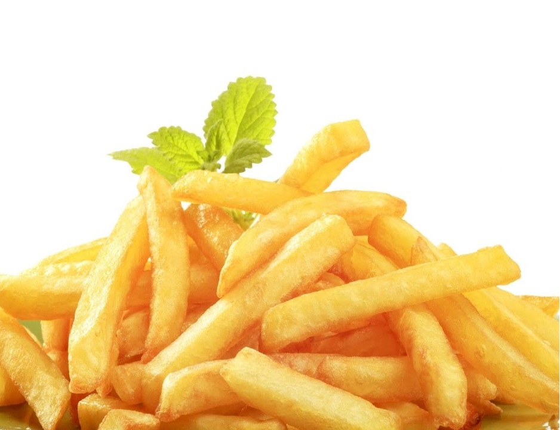
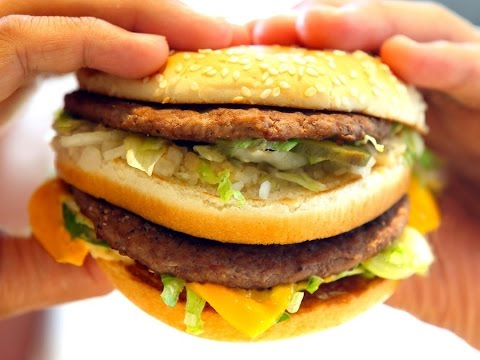
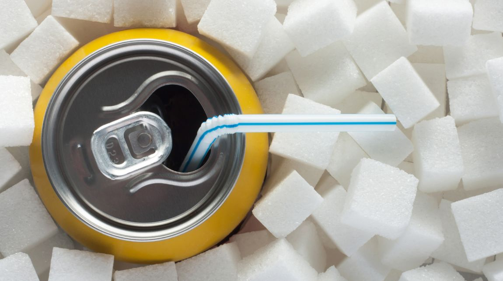
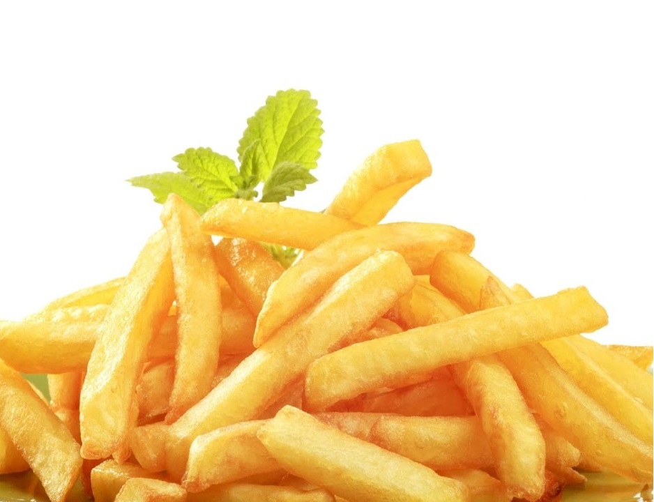

overweight : Eating fast food leads to a possible increase in weight for its consumers, according
to one study, especially among children and adolescents, due to the fact that these foods contain high amounts of
sugar and fat in their composition, which is a reason for the body to obtain a large amount of calories. In addition
to the possibility of developing chronic diseases resulting from obesity and the high consumption of fats and sugars.
Asthma and shortness of breath : Fast food negatively affects the health of the respiratory system,
and causes it to some problems such as asthma and shortness of breath, and this infection appears more clearly in
children, according to studies, especially those who eat this type of food at an average of three times per week, and
the reason for this injury is that eating fast foods is linked Obesity and weight gain, and weight gain is in turn
linked to increased pressure on the heart and lungs, so symptoms of this stress appear as difficulty breathing when
exercising different activities, such as walking, stairs, or exercising.
Eating junk food causes the body to regulate insulin levels, due to its high sugar content.
A high-fast foods content of saturated fats affects the body's metabolism, causing it to slow.
The risk of heart disease increases by 20% in people who eat fast foods on average once a week, and the percentage
rises among those who consume them at the rate of two or three times a week to reach 50%, while it rises to about 80%
among those who eat fast foods at a rate of 4 times per week compared to others.
People who eat fast food have an increased risk of diabetes twice or more per week, to 27% compared to others.
Soft drinks

Overweight and obesity: As eating one can of mineral daily, which is equivalent to 330 ml of
soft drinks, can gain weight by about 0.5 kg or more per month, and increase the risk of obesity, and eating
sugar-sweetened drinks is related to the accumulation of fat around the abdominal area.
Increased risk of developing diabetes:Besides the calories that an individual gains by consuming
sweetened soft drinks, they negatively affect the body's ability to burn sugar, which in turn increases the chance of
developing diabetes, as the pancreas remains under pressure to produce more insulin, and with time insulin becomes
less sensitive and effective in treating sugar .
Increased risk of osteoporosis:Consuming soft drinks more often increases the chance of
developing osteoporosis, and it is important to mention that higher consumption by children increases the chance
of bone calcification in the growth period, and some studies have found that the acidity of these drinks weakens
the bone by encouraging the loss of calcium.
Increased incidence of kidney problems:Studies have found that soft drinks increase the chance
of kidney stones, due to acidity and imbalance of root minerals. The body uses acid to store these drinks with bone
with calcium. When calcium is excreted in the urine, these stones are slowly formed.
high blood pressure:The increased consumption of soft drinks contributes to high blood pressure
due to the increased consumption of fruit sugar, which is one of the most important components of soft drinks.
Poor digestion:Soft drinks contain acidic substances, but the huge amounts of added sugar cover
this acidity. When you drink them, you give this degree of acidity to all parts of the digestive system that precede
the stomach. By their nature, they are very sensitive to acid. It is worth noting that phosphoric acid, which is an
acid found in these drinks, interacts with hydrochloric acid in the stomach, and causes an imbalance in its function,
so it breaks down in the digestion of food.
fried potato

According to the American website, a small order of french fries from a fast food restaurant contains 230
calories, 100 of which are caused by fats caused by deep frying of potatoes in oil.As for 100 grams of fried potatoes
in copious oil, it contains 311 calories, and the calories will increase in size if you add flour or spices, not to
mention the extra calories of white bread that many prefer to eat with french fries, a loaf of bread in the size of
80 grams and size 18 cm, contains At 208 calories.
What about saturated fats in french fries? Unlike calories, anything that dives into a deep
frying pan will contain a large dose of normally saturated fat, and saturated fat raises harmful cholesterol in
the blood, leaving the person at risk of heart disease and stroke, according to the American Heart Association.
One meal of homemade french fries (half a potato and half a tablespoon of olive oil) contains 1 gram of saturated
fat, while the small packet of French fries in fast food restaurants contains one and a half grams of these harmful
fats.
coffee
Coffee There is a common assumption among people that drinking coffee is a bad habit,
and many accuse coffee of being the cause of many health problems, such as cardiovascular
disease and some types of cancer, but many recent scientific studies have indicated that
the health benefits of coffee, which can outweigh its risks If it is consumed in moderate
quantities, while the harm and health risks associated with drinking moderate amounts of
coffee may be not due to coffee but because of the unhealthy behaviors associated with
drinking coffee that are higher in people who drink coffee than those who do not drink it,
Such as smoking cigarettes and lack of physical activity, as the addition of sugar and
bleached cream to it makes it a source of high calories and fat. This can cause weight
gain and increase the risk of related diseases.
TEA
Drinking tea in moderation is considered safe among adults, but care must be taken to
drink it sometimes, and adhere to the recommended amounts daily. Pregnant and breastfeeding
women are not advised to drink more than 3 cups of black tea, or two cups of green tea, and
may cause caffeine found in Green or black tea have some side effects, and we mention them
Increased risk of miscarriage, sudden infant death syndrome
Irritable bowel movements, increased mobility in breastfed babies, and their mothers consumed tea.
Increased risk of birth defects in a fetus due to a deficiency of folic acid.
Feeling anxious.
Irregular heartbeat in some people, such as people with heart disease.
Increased risk of diarrhea, and it can also worsen the symptoms of Irritable Bowel Syndrome.
The possibility of high blood pressure for those who consume it for the first time and irregularly.
High risk of developing overactive bladder.
Increased risk of osteoporosis, because of its effect in raising the rate of excretion of calcium in
the urine, and therefore it is advised to compensate for the loss of calcium and not to eat more than 2-3
cups of black tea, which contains approximately 300 milligrams of caffeine. Headache and nervous tension.
The increased risk of catching glaucoma in the eye, due to increased intraocular pressure after being
consumed half an hour to 90 minutes

fast food
Soft drinks
fried potato
According to the American website, a small order of french fries from a fast food restaurant contains 230 calories, 100 of which are caused by fats caused by deep frying of potatoes in oil.As for 100 grams of fried potatoes in copious oil, it contains 311 calories, and the calories will increase in size if you add flour or spices, not to mention the extra calories of white bread that many prefer to eat with french fries, a loaf of bread in the size of 80 grams and size 18 cm, contains At 208 calories.
What about saturated fats in french fries?
Unlike calories, anything that dives into a deep frying pan will contain a large dose of normally saturated fat, and saturated fat raises harmful cholesterol in the blood, leaving the person at risk of heart disease and stroke, according to the American Heart Association.
One meal of homemade french fries (half a potato and half a tablespoon of olive oil) contains 1 gram of saturated fat, while the small packet of French fries in fast food restaurants contains one and a half grams of these harmful fats.
coffee
Coffee There is a common assumption among people that drinking coffee is a bad habit, and many accuse coffee of being the cause of many health problems, such as cardiovascular disease and some types of cancer, but many recent scientific studies have indicated that the health benefits of coffee, which can outweigh its risks If it is consumed in moderate quantities, while the harm and health risks associated with drinking moderate amounts of coffee may be not due to coffee but because of the unhealthy behaviors associated with drinking coffee that are higher in people who drink coffee than those who do not drink it, Such as smoking cigarettes and lack of physical activity, as the addition of sugar and bleached cream to it makes it a source of high calories and fat. This can cause weight gain and increase the risk of related diseases.
TEA
Drinking tea in moderation is considered safe among adults, but care must be taken to drink it sometimes, and adhere to the recommended amounts daily. Pregnant and breastfeeding women are not advised to drink more than 3 cups of black tea, or two cups of green tea, and may cause caffeine found in Green or black tea have some side effects, and we mention them